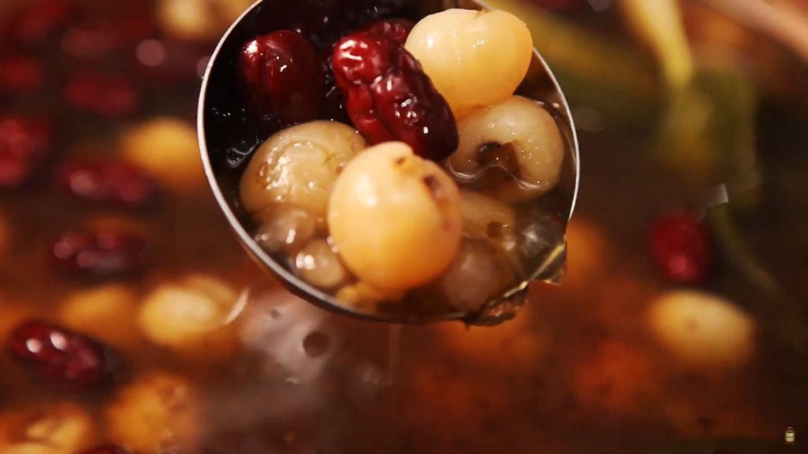

Taiwanese Raindrop Jelly
Ingredients
- 300 g gingko nuts (300克白果)
- 50 g large sago seeds (50克大西米子)
- 100 g dried logan (100克龙眼干)
- 25 red dates (25颗红枣)
- 50 g barley (50克薏米)
- 10 pang da hai seeds （10颗胖大海）
- 5 g jelly strips (5克琼脂)
- 5 pandan leave tie into a knot (5片香兰叶, 绑成结）
- 80 g gula malacca (80克耶糖)
- 50 g rock sugar （50克冰糖）
Preperation Time - 3 hours
Instructions
-
Remove the shell, skin and embryo of the gingko nuts. In a saucepan with
500ml of water, simmer gingko nuts for 10 mins. Add in 15g
rock sugar, boil till the sugar dissolves. Transfer the gingko nuts and
sugar water into an air-tight box, allow it to cool down to room temperature
and store it in the chiller overnight. The sweetness will infuse into the
gingko nuts and it will be “Q” when eaten.
-
In a casserole with 5l boiling water, pour in the sago seeds. Stir and
allow it to boil for 40 mins on high fire. Monitor the water
level, add in water to prevent the sago from getting burnt. Switch off the
fire, close the lid, allow it to sit for 1hr. Drain, place it in a bowl of
room temperature water and allow it to cool down. Most of the sago seeds
should only left with 30% of white core. Repeat the steps again until the
sago turns fully transparent. Drain and transfer the sago into an air-tight
box, toss in 1 tbsp of white castor sugar. Store it in the chiller
overnight.
-
(a) Barley seeds: In a saucepan of 500ml of boiling water, pour in the
barley and cook for 15 mins till it softened. Drain and set
aside.
-
(b) In a bowl with 500ml hot water, soak Pang Da Hai for 10 mins. Place
them on a strainer, remove seed, veins and shells.
- (c) Rinse red dates. Soak in 300ml of hot water for 15 mins.
-
(d) Cut the Jelly strips into 6cm long. Soak in room temperature water for
15 mins.
-
In a big casserole, pour in 3l of water, Longan, red dates and knotted
pandan leaves. Allow it to simmer for 10 minutes. Add in Gingko
nuts, Gula Malacca and Rock Sugar and cook for 3 minutes. Add in sago seeds
and Jelly strips, cook for 1 min. Stir in Pang Da Hai. Mix well and ready to
serve.
